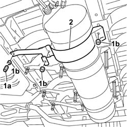
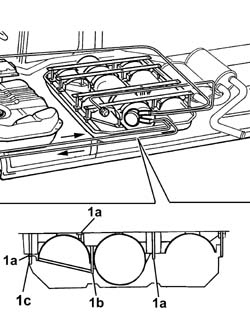

1043A11 GPL TANK MOUNTING BRACKET -R.R.
- Path
- Procedures > 10 ENGINE UNIT > 1043 GPL TANK AND PIPES > 1043A GPL TANK > 1043A11 GPL TANK MOUNTING BRACKET -R.R.
- Kind
- repair procedure (removal / refitting; the operation number is the code)
- Applies to
- engines: 2.0 16V; all production periods
- Interactive page
- https://sloeber94.github.io/elrnDB-fDct/en/#/244002622
Applies to: engines: 2.0 16V; all production periods
 Removing
Removing
 Refitting
RefittingPosition the vehicle on the lift.
Op. 1043E12 GPL TANK GUARD PROTECTION R R
1. Undo the spacers (1a) and the nuts (1b) fixing the LPG tank mounting bracket.
2. Remove the LPG tank mounting bracket.

Applies to: engines: 2.0 16V; all production periods
Refitting
RemovingFit the LPG tank mounting bracket and tighten the nuts.
1. Tighten the fixing nuts (1a) and (1b) to torque and then the spacers (1c) securing the LPG canister mounting bracket to the bodyshell.
Value daNm | Fastening | Component | Ø | |
|---|---|---|---|---|
1a | 4 | Nut | on floor | M12 X 1.25 |
Value daNm | Fastening | Component | Ø | |
|---|---|---|---|---|
1b | 8 | Nut | - | M12 X 1.25 |
Value daNm | Fastening | Component | Ø | |
|---|---|---|---|---|
1c | 4 | Spacer | - | M12 X 1.25 |

Applies to: engines: 2.0 16V; all production periods
Op. 1043E12 GPL TANK GUARD PROTECTION R R
Remove the vehicle from the lift.